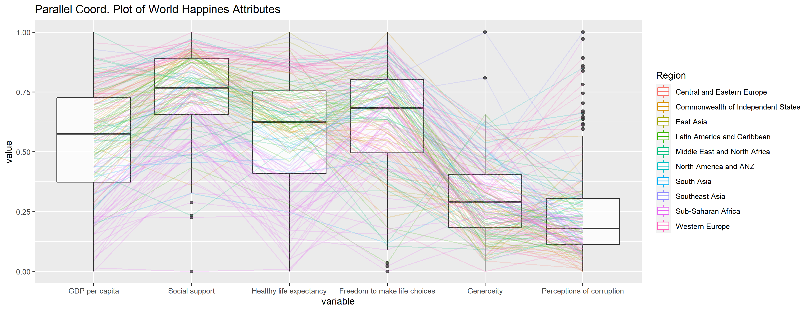
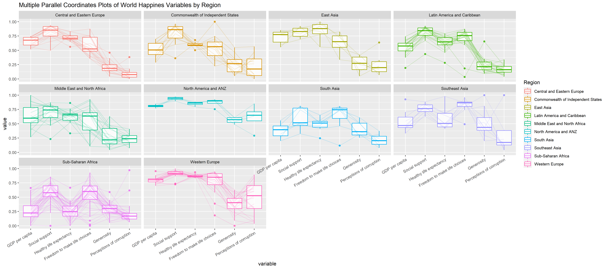

1.0 Overview
Parallel coordinates plot is a data visualisation specially designed for visualising and analysing multivariate, numerical data. It is ideal for comparing multiple variables together and seeing the relationships between them. For example, the variables contribute to Happiness Index. Parallel coordinates was invented by Alfred Inselberg in the 1970s as a way to visualize high-dimensional data. This data visualisation technique is more often found in academic and scientific communities than in business and consumer data visualizations. As pointed out by Stephen Few(2006), “This certainly isn’t a chart that you would present to the board of directors or place on your Web site for the general public. In fact, the strength of parallel coordinates isn’t in their ability to communicate some truth in the data to others, but rather in their ability to bring meaningful multivariate patterns and comparisons to light when used interactively for analysis.” For example, parallel coordinates plot can be used to characterise clusters detected during customer segmentation.
By the end of this hands-on exercise, you will gain hands-on experience on:
- plotting statistic parallel coordinates plots by using ggparcoord() of GGally package,
- plotting interactive parallel coordinates plots by using parcoords package, and
- plotting interactive parallel coordinates plots by using parallelPlot package.
2.0 Installing and Launching R Packages
For this exercise, the GGally, parcoords, parallelPlot and tidyverse packages will be used.
The code chunks below are used to install and load the packages in R.
packages = c('GGally', 'parcoords', 'parallelPlot', 'tidyverse')
for (p in packages){
if(!require(p, character.only = T)){
install.packages(p)
}
library(p,character.only = T)
}
3.0 Data Preparation
In this hands-on exercise, the World Happinees 2018 (http://worldhappiness.report/ed/2018/) data will be used. The data set is download at https://s3.amazonaws.com/happiness-report/2018/WHR2018Chapter2OnlineData.xls. The original data set is in Microsoft Excel format. It has been extracted and saved in csv file called WHData-2018.csv.
In the code chunk below, read_csv() of readr package is used to import WHData-2018.csv into R and save it into a tibble data frame object called wh.
wh <- read_csv("data/WHData-2018.csv")
4.0 Plotting Static Parallel Coordinates Plot
In this section, you will learn how to plot static parallel coordinates plot by using ggparcoord() of GGally package. Before getting started, it is a good practice to read the function description in detail.
4.1 Plotting a simple parallel coordinates
Code chunk below shows a typical syntax used to plot a basic static parallel coordinates plot by using ggparcoord().
ggparcoord(data = wh,
columns = c(7:12))

Notice that only two argument namely data and columns is used. Data argument is used to map the data object (i.e. wh) and columns is used to select the columns for preparing the parallel coordinates plot.
4.2 Plotting a parallel coordinates with boxplot
The basic parallel coordinates failed to reveal any meaning understanding of the World Happiness measures. In this section, you will learn how to makeover the plot by using a collection of arguments provided by ggparcoord().
ggparcoord(data = wh,
columns = c(7:12),
groupColumn = 2,
scale = "uniminmax",
alphaLines = 0.2,
boxplot = TRUE,
title = "Parallel Coordinates Plot of World Happines Variables")

Things to learn from the code chunk above.
groupColumnargument is used to group the observations (i.e. parallel lines) by using a single variable (i.e. Region) and colour the parallel coordinates lines by region name.scaleargument is used to scale the variables in the parallel coordinate plot by usinguniminmaxmethod. The method univariately scale each variable so the minimum of the variable is zero and the maximum is one.
alphaLinesargument is used to reduce the intensity of the line colour to 0.2. The permissible value range is between 0 to 1.boxplotargument is used to turn on the boxplot by using logicalTRUE. The default isFALSE.titleargument is used to provide the parallel coordinates plot a title.
4.3 Parallel coordinates with facet
Since ggparcoord() is developed by extending ggplot2 package, we can combination use some of the ggplot2 function when plotting a parallel coordinates plot.
In the code chunk below, facet_wrap() of ggplot2 is used to plot 10 small multiple parallel coordinates plots. Each plot represent one geographical region such as East Asia.
ggparcoord(data = wh,
columns = c(7:12),
groupColumn = 2,
scale = "uniminmax",
alphaLines = 0.2,
boxplot = TRUE,
title = "Multiple Parallel Coordinates Plots of World Happines Variables by Region") +
facet_wrap(~ Region)

One of the aethetic defect of the current design is that some of the variable names overlap on x-axis.
4.3.1 Rotating x-axis text label
To make the x-axis text label easy to read, let us rotate the labels by 30 degrees. We can rotate axis text labels using theme() function in ggplot2 as shown in the code chunk below
ggparcoord(data = wh,
columns = c(7:12),
groupColumn = 2,
scale = "uniminmax",
alphaLines = 0.2,
boxplot = TRUE,
title = "Multiple Parallel Coordinates Plots of World Happines Variables by Region") +
facet_wrap(~ Region) +
theme(axis.text.x = element_text(angle = 30))

Thing to learn from the code chunk above:
- To rotate x-axis text labels, we use
axis.text.xas argument totheme()function. And we specifyelement_text(angle = 30)to rotate the x-axis text by an angle 30 degree.
4.3.2 Adjusting the rotated x-axis text label
Rotating x-axis text labels to 30 degrees makes the label overlap with the plot and we can avoid this by adjusting the text location using hjust argument to theme’s text element with element_text(). We use axis.text.x as we want to change the look of x-axis text.
ggparcoord(data = wh,
columns = c(7:12),
groupColumn = 2,
scale = "uniminmax",
alphaLines = 0.2,
boxplot = TRUE,
title = "Multiple Parallel Coordinates Plots of World Happines Variables by Region") +
facet_wrap(~ Region) +
theme(axis.text.x = element_text(angle = 30, hjust=1))

5.0 Plotting Interactive Parallel Coordinates: parcoords methods
5.1 Getting to know parcoords package
parcoords is a htmlwidget for d3 parallel coordinates plot. It gives R users the very well designed and interactive parallel-coordinates chart for d3 with the infrastructure, flexibility, and robustness of htmlwidgets.
5.2 The basic plot
The code below plot a parallel coordinates plot using the basic parcoords() syntax.
parcoords(wh[,7:12])
In fact, the basic syntax can only plot a static parallel coordinates plot.
5.3 Plotting an Interactive Parallel Coordinates Plot
In the code chunk below, two interactivity arguments are used, they are:
reorderableargument enables reordering of axes when it is set to TRUE or T, andbrushModeargument provides highlighting with brushing. Three options are provided, they are: “1D-axes”, “1D-axes-multi”, or “2D-strums”.
parcoords(
wh[,7:12],
rownames = FALSE,
reorderable = T,
brushMode = '1D-axes',
width = 700,
height = 400)
Other things to learn from the code chunk above.
- By setting the
rownamesargument to FALSE will exclude the default rawnames column. - By using
widthargument to avoid horizontal scrolling. - By using
heightargument to change the height of the parallel coordinates plot.
5.4 Changing the aethetic properties
In the code chunk below, two arguments are used, they are:
alphato set the opacity of the polylines. The value range from 0 (completely transparent) to 1 (no opacity).alphaOnBrushedto set opacity from 0 to 1 when brushed (default to 0).
parcoords(
wh[,7:12],
rownames = FALSE,
alpha = 0.3,
alphaOnBrushed = 0.2,
reorderable = T,
brushMode = '1D-axes',
width = 700,
height = 400)
6.0 Plotting Interactive Parallel Coordinates Plot: parallelPlot methods
parallelPlot is an R package specially designed to plot a parallel coordinates plot by using ‘htmlwidgets’ package and d3.js. In this section, you will learn how to use functions provided in parallelPlot package to build interactive parallel coordinates plot.
6.1 The basic plot
The code chunk below plot an interactive parallel coordinates plot by using parallelPlot().
wh <- wh %>%
select("Happiness score", c(7:12))
parallelPlot(wh)
Notice that some of the axis labels are too long. You will learn how to overcome this problem in the next step.
6.1.1 Rotate axis label
In the code chunk below, rotateTitle argument is used to avoid overlapping axis labels.
parallelPlot(wh,
rotateTitle = TRUE)
One of the useful interactive feature of parallelPlot is we can click on a variable of interest, for example Happiness score, the monotonous blue colour (default) will change a blues with different intensity colour scheme will be used.
6.1.2 Changing the colour scheme
We can change the default blue colour scheme by using continousCS argument as shown in the code chunl below.
parallelPlot(wh,
continuousCS = "YlOrRd",
rotateTitle = TRUE)
6.2 Parallel coordinates plot with histogram
In the code chunk below, histoVisibility argument is used to plot histogram along the axis of each variables.
References
ggparcoord() of GGally package